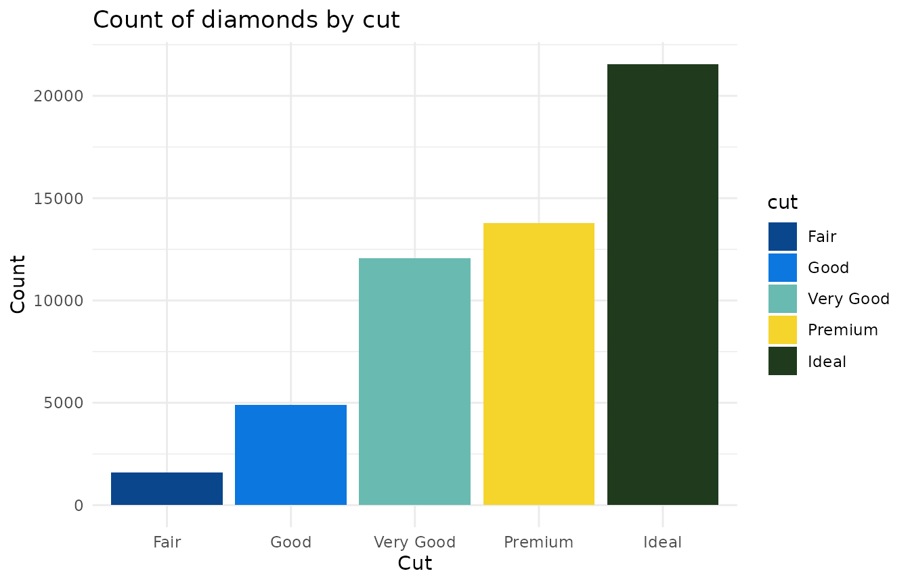
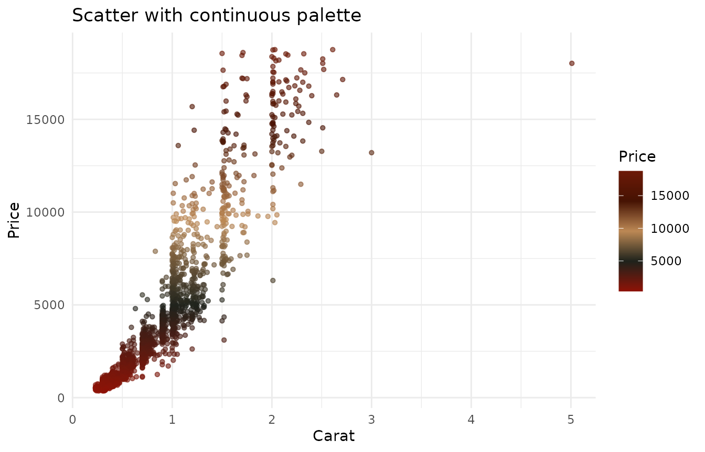

Using harlem color palettes
harlem.RmdThe harlem package provides color palettes inspired by
Harlem Renaissance artworks. Use them in base R plots or with
ggplot2.
Available palettes
names(harlem_palettes)
#> [1] "LawrenceStreetScene" "BeardenConjurWoman" "DouglasAspects"
#> [4] "MotleyBlues" "JohnsonHarlem" "SargentOctoroonGirl"
#> [7] "DelaneySelfPortrait" "JonesLaBaker" "HaydenFetiche"
#> [10] "MotleyNightlife" "JonesAscentEthiopia" "CharlesWhiteSoldier"
#> [13] "DouglasSongTowers" "JohnsonGoingChurch" "LoisMailouJones"
#> [16] "WoodruffAmistad"
Discrete example (bar plot)
# Use a discrete palette directly
palette <- harlem_palettes$JonesAscentEthiopia
# Diamonds bar chart colored by cut
p1 <- ggplot(diamonds, aes(x = cut, fill = cut)) +
geom_bar() +
scale_fill_manual(values = palette) +
theme_minimal() +
labs(title = "Count of diamonds by cut",
x = "Cut", y = "Count")
p1
Continuous example (scatter plot)
# Build a continuous gradient from a palette
continuous_cols <- harlem_palette("MotleyBlues", n = 256, type = "continuous")
# Use a scatter plot to demonstrate continuous color scale
subset_diamonds <- diamonds[sample.int(nrow(diamonds), 2000), ]
p2 <- ggplot(subset_diamonds, aes(x = carat, y = price, color = price)) +
geom_point(alpha = 0.6, size = 1.2) +
scale_color_gradientn(colors = continuous_cols) +
theme_minimal() +
labs(title = "Scatter with continuous palette",
x = "Carat", y = "Price", color = "Price")
p2